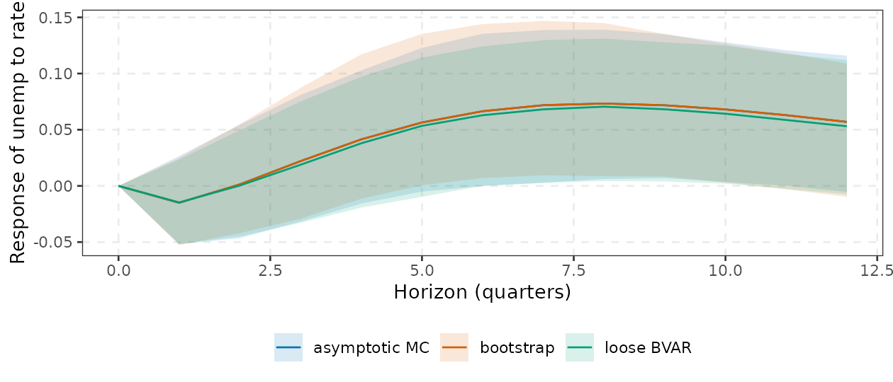

This report states what was checked, against what, and how close the numbers are. Checks are of three kinds:
-
Exact agreement with an independent implementation
(
vars,BVAR,lpirfs,lm+sandwich, closed-form or quadrature results). These run live in this document (section 2), so the numbers below are recomputed every time the vignette is built. -
Statistical agreement (Monte Carlo error, Geweke
joint-distribution tests, simulation-based calibration, coverage
simulations). These take minutes, so section 3 quotes the
output of the scripts in
validation/, with the exact command that reproduces each block. - Known failures and limitations found by those checks (section 5). They are listed because a validation report that only shows passes is not informative.
Numbers quoted in section 3 and 4 were produced on an Apple M4 Pro, R 4.6.1, macOS 26.6, OpenBLAS, with the version of the code in this repository. They are single runs with the seeds in the scripts; Monte Carlo errors are noted where they matter.
1. How to run everything
From the package root:
# unit tests (846 expectations; about 15 s)
Rscript validation/run-all.R # same as testthat::test_dir("tests/testthat")
# heavier validation scripts (not run by run-all.R)
Rscript validation/bayes.R # sections s1-s8 and s2d, about 3 min
Rscript validation/bayes.R s5 s7 # a subset of sections
Rscript validation/ident-extra.R # about 5 s
Rscript validation/proxy-bayes-full.R # reps T (default 50, 300), about 5 s
Rscript validation/proxy-coverage.R 200 199 200 # reps nboot T, about 5 s
Rscript validation/lp-extra.R # about 10 s
Rscript validation/tvp.R # about 4 minvalidation/run-all.R runs only
tests/testthat. The scripts in validation/
print [PASS]/[FAIL] lines
(bayes.R) or raw numbers for inspection (the others); they
are not wired into R CMD check. The reference packages are
listed under Suggests; tests that need one skip when it is
missing (svars is listed but not installed on the machine
used here, and no check in this report uses it).
At the time of writing the test suite gives 846 expectations / 0
failures / 5 skips (about 15 s), over ten files. The skips are the
comparisons against vars, lpirfs and
psvar, which did not load on the machine used for this
update (see section 6):
| file | covers |
|---|---|
test-var.R |
OLS, logLik, IC, stability, Cholesky IRF/FEVD,
Blanchard-Quah, forecasts vs vars; bootstrap variants; edge
cases and error messages |
test-bayes.R |
triangular sampler vs exact posterior, SV (Geweke), SSVS/horseshoe,
fixed-hyperparameter NIW moments, Haar rotations, MC covariance,
mcmc_diagnostics
|
test-bvar-conj.R |
hierarchical NIW log posterior vs BVAR; sampler sanity;
irf/fevd/hd/forecast
on bvarm
|
test-psvar.R |
proxy-SVAR vs hand computation, Mertens-Ravn B1, robust (MOSW) sets, block bootstrap, Bayesian proxy, LP-IV consistency |
test-psvar-bayes-full.R |
varm_proxy_arw() and varm_proxy_gkr()
|
test-ident-extra.R |
id_proxy, proxy_draws, zero+sign,
id_restrictions, id_hetero
|
test-lp.R |
LP coefficients and HAC/HC errors vs lm +
sandwich, LP-IV vs manual 2SLS |
test-lp-extra.R |
lp_joint, lp_supt, lp_state
(vs lm+NW and lpirfs), lp_smooth,
lp_panel, lp_forecast,
compare_lp_var
|
test-tvp.R |
dimensions, constant limit vs OLS, methods, variants, prior calibration |
test-methods.R |
print/summary/accessor methods, plotting |
2. Live checks: agreement with reference implementations
2.1 Reduced-form VAR against vars
if (have("vars")) {
f <- varm(Y, p = 2)
v <- vars::VAR(Y, p = 2, type = "const")
Bv <- sapply(v$varresult, coef)
vs <- vars::VARselect(Y, lag.max = 6, type = "const")
mine <- var_select(Y, 6)
ir <- vars::irf(v, n.ahead = 12, ortho = TRUE, boot = FALSE)$irf
fe <- vars::fevd(v, n.ahead = 13)
m_ir <- irf(f, horizon = 12, ci = "none")$estimate
m_fe <- fevd(f, horizon = 12, ci = "none")$estimate
d_ir <- d_fe <- 0
for (s in colnames(Y)) for (r in colnames(Y)) {
d_ir <- max(d_ir, abs(unname(m_ir[r, s, ]) - ir[[s]][, r]))
d_fe <- max(d_fe, abs(unname(m_fe[r, s, ]) - fe[[r]][, s]))
}
fc <- predict(v, n.ahead = 8, ci = 0.95)$fcst
mf <- forecast(f, h = 8, ci = "none")$mean
d_fc <- max(sapply(colnames(Y), function(k) max(abs(unname(mf[, k]) - fc[[k]][, "fcst"]))))
res_vars <- tibble::tibble(
quantity = c("coefficients B", "residual covariance", "log-likelihood", "information criteria (AIC, HQ, SC)",
"root moduli (companion)", "Cholesky IRF, h = 0..12", "FEVD, h = 0..12", "point forecast, h = 1..8"),
max_abs_diff = c(max(abs(unname(f$B) - unname(Bv))),
max(abs(unname(f$Sigma) - unname(summary(v)$covres))),
abs(as.numeric(logLik(f)) - as.numeric(logLik(v))),
max(abs(unname(mine$criteria[, 1:3]) - unname(t(vs$criteria)[, 1:3]))),
max(abs(sort(stability(f), decreasing = TRUE) - sort(Mod(vars::roots(v)), decreasing = TRUE))),
d_ir, d_fe, d_fc))
res_vars$max_abs_diff <- sci(res_vars$max_abs_diff)
print(res_vars, n = Inf)
cat("lag order chosen (AIC, HQ, SC, FPE): varm", mine$selection, "| vars", vs$selection, "\n")
}
#> # A tibble: 8 × 2
#> quantity max_abs_diff
#> <chr> <chr>
#> 1 coefficients B 3.9e-13
#> 2 residual covariance 2.2e-16
#> 3 log-likelihood 0.0e+00
#> 4 information criteria (AIC, HQ, SC) 2.7e-15
#> 5 root moduli (companion) 3.8e-13
#> 6 Cholesky IRF, h = 0..12 6.1e-13
#> 7 FEVD, h = 0..12 5.8e-13
#> 8 point forecast, h = 1..8 7.1e-12
#> lag order chosen (AIC, HQ, SC, FPE): varm 6 2 2 6 | vars 6 2 2 6The unit tests assert agreement to 1e-9; the observed
differences above are rounding-level. Lag selection is identical (the
information criteria differ by rounding only).
2.2 Blanchard-Quah impact matrix against vars::BQ
if (have("vars")) {
bq <- vars::BQ(vars::VAR(Y[, 1:2], p = 2))
P <- irf(varm(Y[, 1:2], p = 2), id = id_longrun(), horizon = 0, ci = "none")$estimate[, , 1]
cat("max | |P_varm| - |P_vars| | =", sci(max(abs(abs(unname(P)) - abs(unname(bq$B))))), "(columns match up to sign)\n")
}
#> max | |P_varm| - |P_vars| | = 1.7e-13 (columns match up to sign)2.3 Local projections against lm +
sandwich
For each response and horizon, LP is an OLS regression of
on the shock and controls. The comparison builds the same regression by
hand with lm() and takes the Newey-West (Bartlett, lag
,
no prewhitening, no small-sample factor) and HC1 variances from
sandwich.
if (have("sandwich")) {
n <- nrow(Y); p <- 3; H <- 6
lead <- function(x, h) if (h == 0) x else c(x[-(1:h)], rep(NA, h))
lagm <- function(x, l) c(rep(NA, l), x[1:(n - l)])
dfL <- data.frame(Y)
for (l in 1:p) for (v in colnames(Y)) dfL[[paste0(v, ".l", l)]] <- lagm(Y[, v], l)
ctr <- paste(c("infl", "unemp", setdiff(names(dfL), colnames(Y))), collapse = "+")
manual <- function(h, v) {
d <- dfL; d$yy <- lead(Y[, v], h); d <- d[(p + 1):(n - h), ]
lm(as.formula(paste("yy ~ rate +", ctr)), d)
}
f_nw <- lp(Y, shock = "rate", horizon = H, lags = p, contemp = c("infl", "unemp"))
f_hc <- lp(Y, shock = "rate", horizon = H, lags = p, contemp = c("infl", "unemp"), se = "hc")
d_b <- d_nw <- d_hc <- 0
suppressWarnings(for (h in 0:H) for (v in colnames(Y)) {
fm <- manual(h, v)
d_b <- max(d_b, abs(f_nw$estimate[h + 1, v] - coef(fm)[["rate"]]))
d_nw <- max(d_nw, abs(f_nw$se[h + 1, v] -
sqrt(sandwich::NeweyWest(fm, lag = h + 1, prewhite = FALSE, adjust = FALSE)["rate", "rate"])))
d_hc <- max(d_hc, abs(f_hc$se[h + 1, v] - sqrt(sandwich::vcovHC(fm, "HC1")["rate", "rate"])))
})
tibble::tibble(quantity = c("LP coefficient", "Newey-West se", "HC1 se"),
max_abs_diff = sci(c(d_b, d_nw, d_hc)), horizons = "0..6, all 3 responses")
}
#> # A tibble: 3 × 3
#> quantity max_abs_diff horizons
#> <chr> <chr> <chr>
#> 1 LP coefficient 7.3e-14 0..6, all 3 responses
#> 2 Newey-West se 2.7e-13 0..6, all 3 responses
#> 3 HC1 se 2.9e-13 0..6, all 3 responses2.4 State-dependent LP against lpirfs::lp_nl
lp_state(timing = "lagged") reproduces the
lpirfs convention (logistic state weight on the lagged
HP-filtered indicator, interacted lag-1 coefficients, Cholesky columns
of the linear VAR). One configuration is run live; the second
configuration (levels-standardised state, trend, a different shock type)
is in validation/lp-extra.R, and its output is quoted in
section 3.4.
if (have("lpirfs")) {
H <- 8; df <- as.data.frame(yraw)
ref <- suppressMessages(lpirfs::lp_nl(df, lags_endog_lin = 2, lags_endog_nl = 2, trend = 0, shock_type = 0,
confint = 1, hor = H, switching = yraw$infl, use_hp = 1, lambda = 1600,
gamma = 3, use_nw = TRUE, num_cores = 1))
d <- sapply(1:3, function(sj) {
me <- lp_state(yraw, all_of(sj), "infl", H, lags = 2, timing = "lagged", lags_lin = 2, shock_type = 0,
gamma = 3, hp_lambda = 1600, state_const = FALSE, trend = FALSE)
c(high = max(abs(me$estimate[, , "high"] - t(ref$irf_s1_mean[, , sj]))),
low = max(abs(me$estimate[, , "low"] - t(ref$irf_s2_mean[, , sj]))))
})
colnames(d) <- paste("shock", 1:3)
apply(d, 1:2, sci)
}
#> shock 1 shock 2 shock 3
#> high "1.5e-13" "2.4e-13" "2.6e-13"
#> low "2.2e-13" "3.1e-13" "4.0e-13"2.5 Hierarchical Bayesian VAR: log posterior against
BVAR
BVAR::bvar() optimises the log posterior of the
hyperparameters
(overall tightness, sum-of-coefficients, single-unit-root, prior scale).
Evaluating the varm log posterior at the same point (with
the same psi and the same hyperprior parameters) must give
the same value. The comparison is deterministic, so any difference is
numerical rounding. It uses internal helper functions
(varm:::cpp_niw_logpost).
if (have("BVAR")) {
p <- 4
set.seed(1)
bv <- suppressWarnings(BVAR::bvar(Y, lags = p, n_draw = 400, n_burn = 100, n_thin = 1,
priors = BVAR::bv_priors(hyper = "auto", mn = BVAR::bv_mn(), soc = BVAR::bv_soc(), sur = BVAR::bv_sur()),
verbose = FALSE))
ols <- varm:::cpp_var_ols(Y, p, matrix(1, nrow(Y), 1))
b <- matrix(0, 13, 3); b[cbind(1:3, 1:3)] <- 1
gamma_coef <- varm:::gamma_coef
gp <- rbind(gamma_coef(.2, .4), gamma_coef(2, .25), gamma_coef(1, 1), gamma_coef(1, 1))
h <- c(bv$optim$par[["lambda"]], 2, bv$optim$par[["soc"]], bv$optim$par[["sur"]], bv$priors$psi$mode)
# BVAR takes its dummy means from the regression sample, so pass those rows here (bvarm() uses the presample)
v <- varm:::cpp_niw_logpost(h, ols$Y, ols$X, p, 1L, TRUE, b, 1e7, colMeans(ols$Y[1:p, ]), 1, c(1L, 0L, 1L, 1L, 0L, 0L, 0L), gp,
c(1e-4, 1, 1e-4, 1e-4, 0, 0, 0), c(5, 3, 50, 50, Inf, Inf, Inf), c(.004, .004), FALSE)
cat(sprintf("log posterior: BVAR %.10f varm %.10f |diff| = %s (relative %s)\n",
bv$optim$value, v, sci(abs(v - bv$optim$value)), sci(abs(v - bv$optim$value) / abs(v))))
}
#> log posterior: BVAR -403.7381334206 varm -403.7381334206 |diff| = 1.0e-12 (relative 2.5e-15)2.6 Draw-based IRFs: consistency of the three uncertainty engines
There is no external reference for the bands, so this check is internal: the bootstrap, the asymptotic Monte Carlo and the Bayesian sampler should produce bands of similar width for the same data when the Bayesian prior is loose. This is a consistency check, not a proof of correctness.
set.seed(11)
f <- varm(Y, p = 2)
b_boot <- irf(f, id = id_chol(), horizon = 12, ci = "bootstrap", nboot = 1000)
b_mc <- irf(f, id = id_chol(), horizon = 12, ci = "mc", nboot = 1000)
bf <- bvarm(Y, p = 2, prior_minnesota(lambda = c(5, 1, 1e-4, 50), soc = NULL, sur = NULL, hyper = character(0)),
ndraw = 1000)
b_bay <- irf(bf, id = id_chol(), horizon = 12)
# one tidy() frame per engine: response of unemp to a rate shock, 90% band
cell <- function(ir, engine) {
d <- tidy(ir)
d <- d[d$response == "unemp" & d$shock == "rate" & d$level == 0.9, ]
d$engine <- engine
d
}
d <- rbind(cell(b_boot, "bootstrap"), cell(b_mc, "asymptotic MC"), cell(b_bay, "loose BVAR"))
aggregate(cbind(width = conf.high - conf.low) ~ engine, data = d, FUN = mean) |>
transform(width = round(width, 3))
#> engine width
#> 1 asymptotic MC 0.111
#> 2 bootstrap 0.112
#> 3 loose BVAR 0.106
ggplot(d, aes(horizon, estimate, colour = engine, fill = engine)) +
geom_ribbon(aes(ymin = conf.low, ymax = conf.high), alpha = 0.15, colour = NA) +
geom_line() +
scale_colour_manual(values = varm_palette(3)) +
scale_fill_manual(values = varm_palette(3)) +
labs(x = "Horizon (quarters)", y = "Response of unemp to rate", colour = NULL, fill = NULL) +
theme_varm()
(Mean width of the 90% band of the response of unemp to
rate, horizons 0 to 12, and the bands themselves.)
2.7 The tidy layer is a lossless view of the objects
tidy(), glance() and
autoplot() are thin layers over the stored arrays; the unit
tests cover them. Live, the tibbles reproduce the internals exactly and
every plot builds:
f <- varm(Y, p = 2)
ir <- irf(f, id = id_chol(), horizon = 12, ci = "none")
td <- tidy(ir)
lpf <- lp(Y, shock = rate, contemp = c(infl, unemp), horizon = 6, lags = 2)
tl <- tidy(lpf, conf.int = FALSE)
tibble::tibble(
check = c("tidy(varm) vs coef()", "tidy(irf) vs $estimate", "tidy(lp) vs $estimate"),
max_abs_diff = sci(c(
max(abs(tidy(f)$estimate - as.vector(coef(f)))),
max(abs(td$estimate - ir$estimate[cbind(as.integer(td$response), as.integer(td$shock), td$horizon + 1)])),
max(abs(tl$estimate - lpf$estimate[cbind(tl$horizon + 1, as.integer(tl$response))]))
))
)
#> # A tibble: 3 × 2
#> check max_abs_diff
#> <chr> <chr>
#> 1 tidy(varm) vs coef() 0.0e+00
#> 2 tidy(irf) vs $estimate 0.0e+00
#> 3 tidy(lp) vs $estimate 0.0e+00
glance(f)
#> # A tibble: 1 × 8
#> K p nobs logLik AIC BIC HQ max_root
#> <int> <int> <int> <dbl> <dbl> <dbl> <dbl> <dbl>
#> 1 3 2 213 -338. 731. 822. 768. 0.946
inherits(autoplot(ir), "ggplot") && inherits(autoplot(lpf), "ggplot")
#> [1] TRUE3. Quoted results of the longer scripts
Each block shows the output of the stated command. They are not recomputed when the vignette is built.
3.1 Bayesian engines: Rscript validation/bayes.R
Triangular sampler against an exact posterior (s1). With homoskedastic errors the triangular prior is semi-conjugate, so the posterior of each equation has a one-dimensional-quadrature form. The sampler’s draws are compared with it by -scores of posterior means and variance ratios.
[PASS] 1a K=1 matches exact semi-conjugate posterior max|z|= 2.22 var ratio range 0.997-1.018
[PASS] 1b K=3 reduced-form (B, Sigma, A) vs exact structural posterior max|z| B/Sigma/A: 1.61 1.52 1.59
[PASS] 1c loose prior reproduces OLS max|B-OLS|= 0.00121 (Sigma mean rel dev 0.066 )Stochastic volatility (s2). The Kim-Shephard-Chib mixture is an approximation of the density, so the Geweke joint-distribution test is run with tolerance rather than 2.
Geweke z (sig2,h0,hT,mean h): 0.61 -1.05 -0.94 -0.99 var ratios: 1.002 0.998 0.999 0.998
[PASS] 2a Geweke joint-distribution test (KSC approx; mixture is approximate, tolerance |z|<4)
eq1 (tv): cor(h)=0.965 90% coverage=0.82 ; sigma_h posterior mean=0.084 (true 0.12)
eq2 (const): 90% coverage=0.98 ; mean sd of h2 path=0.234; sigma_h mean=0.074 (true 0, prior mean 0.1)
[PASS] 2b time-varying vol recovery
[PASS] 2b constant vol recovered (sigma_h shrinks, coverage)
[PASS] 2c Sigma = A^-1 Lambda A^-T algebra (last-period vol) max err 0Note the 90% credible band of the true volatility path covers 82% in the time-varying equation, and the posterior mean of the volatility-of-volatility is 0.084 against a truth of 0.12 (one dataset).
Simulation-based calibration of (s2d). Truths are drawn from the prior, data are simulated, and the 90% credible interval of and of the log-volatility path are checked (60 replications):
rank histogram (quintiles) of true sigma_h^2 in posterior: 6 9 14 13 18
[PASS] 2d sigma_h^2 90% credible-interval coverage (prior-drawn truths) cov= 0.833 mean vol-path 90% coverage= 0.883The coverage of is 0.83 against a nominal 0.90, and the rank histogram is tilted toward high ranks (true value ranked high in the posterior, i.e. the posterior of is a little too low). With 60 replications the standard error of a coverage estimate is about 0.04, so the shortfall is suggestive rather than conclusive; see section 5.
Shrinkage priors (s3).
[PASS] 3a SSVS inclusion separates true nonzeros from zeros P(incl|nonzero)= 0.903 P(incl|zero)= 0.199
[PASS] 3b horseshoe/SSVS beat OLS RMSE; horseshoe shrinks zeros rmse hs/ssvs/ols= 0.0362 0.0351 0.0717Conjugate NIW sampler (s4). Fixed hyperparameters:
draws against the analytic NIW moments. Hierarchical: posterior means of
the hyperparameters against an exact quadrature, and against
BVAR’s own MCMC.
[PASS] 4a fixed-hyper draws vs analytic ... z= 3.26 Sigma rel= 0.0013 var rel= 0.0155 corr maxdiff= 0.0134
lambda soc sur
varm 0.9747 0.3682 0.6843
BVAR 0.9869 0.3652 0.6107
exact 0.9800 0.3749 0.6651
[PASS] 4b hierarchical hyper means: varm MCMC vs exact quadrature (within 5%) rel diffs 0.005 0.018 0.029 | BVAR's own MCMC vs exact: 0.007 0.026 0.082
[PASS] 4c posterior mean of B vs BVAR max |posterior mean B diff| = 0.00516The max of 3.26 (over all coefficients; the script’s threshold is 4.5) is the weakest of the agreement numbers in this block. The draws are iid here, so this is a single large-ish order statistic rather than evidence of autocorrelation, but it is the number to look at if the fixed-hyperparameter sampler is ever changed.
Sign restrictions and Haar rotations (s5).
[PASS] 5a Haar K=2: orthogonal, entry law exact (KS), E[Q^2]=1/K, E[det]=0 KS= 0.00195 0.00147 E[Q^2] range 0.4996-0.5004 E[det]= 4e-04
[PASS] 5a Haar K=3: ... KS= 0.00144 0.00286 E[Q^2] range 0.3326-0.3341 E[det]= -0.002
[PASS] 5b K=2 demand/supply toy: acceptance = 1/2 acc= 0.5011
[PASS] 5b accepted demand-shock angles confined to (0,pi/2) and uniform there KS= 0.00204
[PASS] 5b K=3 fully signed column: acceptance = 1/4 acc= 0.2507
[PASS] 5b K=3 two restricted columns vs independent R Haar sampler C++: 0.1678 R: 0.1656
[PASS] 5c accepted IRFs satisfy all sign restrictions; P P' = Sigma violations= 0 of 202500 max|PP'-Sigma|= 6.7e-16 acceptance rate= 0.0704 accepted draws= 2500MCMC diagnostics (s7).
mcmc_diagnostics() is tested on AR(1) chains with known
effective sample size
:
[PASS] 7a ESS of AR(1) phi=.8 vs theory n(1-phi)/(1+phi) mean ESS= 449 theory= 444
[PASS] 7b multi-chain: converged chains R-hat ~ 1, ESS(iid) ~ N
[PASS] 7c non-mixed chains detected by R-hat rhat= 2.27
[PASS] 7d Geweke z ~ N(0,1) under stationarity (sd in 0.8-1.25), large under drift sd(z)= 1.02 drift z= -21.13.2 Coverage of draw-based IRF bands (s6)
Design: Cholesky IRFs of a bivariate VAR(1), , 300 replications, 400 draws each, averaged over the responses; “bc” is Kilian bias correction. The persistence is .
IRF coverage, iid errors
method cov68 cov90 w68 w90
iid 0.593 0.809 0.128 0.211
iid_bc 0.674 0.893 0.156 0.256
wild 0.552 0.754 0.120 0.196
wild_bc 0.622 0.831 0.146 0.239
mc 0.653 0.876 0.136 0.231
IRF coverage, heteroskedastic errors
method cov68 cov90 w68 w90
iid 0.475 0.701 0.210 0.345
iid_bc 0.385 0.610 0.254 0.419
wild 0.531 0.753 0.223 0.365
wild_bc 0.437 0.655 0.283 0.461
mc 0.420 0.614 0.218 0.370What these numbers say:
- With persistent data () and , only the bias-corrected iid bootstrap (0.893) and the Monte Carlo (0.876) are close to the nominal 90%. The plain iid bootstrap covers 81%, the plain wild bootstrap 75%.
- Under heteroskedasticity every method under-covers; the wild bootstrap (0.753) is the best of them but still 15 points below nominal. The bias-corrected versions are worse there (0.61-0.66).
- The script’s pass criteria are relative (“within 0.07 of nominal” for the iid design with the chosen methods; “wild at least as good as iid” for the heteroskedastic one), which is weaker than “nominal coverage achieved”.
3.3 Identification extras:
Rscript validation/ident-extra.R and
validation/proxy-coverage.R
proxy max |est - truth| (T=2000): 0.0679
wild 90% band covers truth at 0.8 of (variable,horizon) cells; F = 1696
mbb 90% band covers truth at 0.867 of (variable,horizon) cells; F = 1696
MC coverage of nominal 90% band (h=0, var 3; 60 reps): mbb 0.867 wild 0.15
zero-sign accept rate: 0.0690 accepted: 1000
max zero violation: 0 max |PP'-Sigma|: 4.4e-16
longrun vs vars::BQ impact (abs, columns match up to sign): 3.5e-13Coverage of 90% intervals of the response of
to a proxy-identified
shock, bivariate VAR(1),
,
200 replications, 199 bootstrap draws, median HAC first-stage
in brackets (validation/proxy-coverage.R 200 199 200):
strong instrument (F = 89.5) weak instrument (F = 2)
method h cover median_width method h cover median_width
wild 0 0.135 0.0270 wild 0 0.210 0.2867
wild 1 0.815 0.2238 wild 1 0.535 0.2776
wild 4 0.845 0.1238 wild 4 0.845 0.1549
wild 8 0.830 0.0283 wild 8 0.835 0.0326
mbb 0 0.870 0.2029 mbb 0 0.940 3.7558
mbb 1 0.820 0.2228 mbb 1 0.945 1.4620
mbb 4 0.765 0.1183 mbb 4 0.910 0.2231
mbb 8 0.800 0.0266 mbb 8 0.860 0.0444
mosw 0 0.905 0.2217 mosw 0 0.880 Inf
mosw 1 0.865 0.2386 mosw 1 0.925 Inf
mosw 4 0.815 0.1313 mosw 4 0.940 Inf
mosw 8 0.785 0.0291 mosw 8 0.910 Inf(The two panels were reformatted from the script’s output;
mosw is the Montiel Olea-Stock-Watson robust set from
varm_proxy_robust().)
Coverage of the two newer Bayesian proxy-SVAR samplers
(varm_proxy_arw(), varm_proxy_gkr()),
VAR(1),
,
50 replications (Rscript validation/proxy-bayes-full.R;
with 50 replications a coverage estimate has a standard error of about
0.04 to 0.07):
arw68 arw90 gkr_set gkr_rcr gkr_bayes90 w_rcr w_bayes
0.690 0.910 0.573 0.907 0.647 0.852 0.708arw68/arw90 are the coverages of the 68%
and 90% posterior bands for the impact responses to the proxied shock.
For the set-identified shock, gkr_set is how often the
truth lies inside the estimated set of posterior means (0.57, so the set
of posterior means alone is not a confidence set), gkr_rcr
is the coverage of the 90% robust credible region (0.91) and
gkr_bayes90 that of the conventional single-prior 90% band
(0.65); w_rcr and w_bayes are the mean widths
(0.85 against 0.71).
3.4 Local-projection extras:
Rscript validation/lp-extra.R
State-dependent LP against lpirfs::lp_nl (two
configurations, three shocks each); the last column compares
per-coefficient HAC band half-widths:
hp=1 shock_type=0 trend=0 shock 1: max|IRF diff| high 2.3e-13 low 2.2e-13; max|band half-width diff| 1.6e-13
hp=1 shock_type=0 trend=0 shock 2: max|IRF diff| high 4.2e-13 low 4.7e-13; max|band half-width diff| 3.2e-13
hp=1 shock_type=0 trend=0 shock 3: max|IRF diff| high 2.3e-13 low 4.5e-13; max|band half-width diff| 1.5e-13
hp=0 shock_type=1 trend=1 shock 1: max|IRF diff| high 4.5e-13 low 4.2e-13; max|band half-width diff| 7.5e-13
hp=0 shock_type=1 trend=1 shock 2: max|IRF diff| high 6.3e-13 low 5.7e-13; max|band half-width diff| 7.0e-13
hp=0 shock_type=1 trend=1 shock 3: max|IRF diff| high 1.8e-13 low 2.9e-13; max|band half-width diff| 1.7e-13Simultaneous (sup-t) bands and smooth LP, simulated VAR(1), 300 replications, , horizons 0 to 12:
90% simultaneous coverage of the whole path: pointwise bands 0.24, sup-t bands 0.78 (nominal 0.90); mean sup-t crit 2.58
MSE of the response path: raw LP 0.0078, smooth LP 0.0052 (ratio 0.66)
same design, lag-augmented (HC) errors: mean pointwise coverage 0.90; whole-path sup-t coverage 0.84LP against VAR (Plagborg-Moller and Wolf, 2021), same lags, recursive
identification,
:
max |LP - VAR| = 0.028 over horizons 0 to 12, with
max |VAR - truth| = 0.014 and
max |LP - truth| = 0.021. This is the
population-equivalence result in action, up to estimation noise at
.
3.5 TVP-VAR: Rscript validation/tvp.R
Constant-coefficient limits (priors with , diffuse initial states) against OLS on the same estimation sample, and the Durbin-Koopman smoother against the exact GLS posterior of the constant model:
max |posterior mean (constant) - OLS| : 0.0044
max |posterior mean (kQ = 1e-6) - OLS| : 0.00313
max |time variation of mean path (kQ->0)| : 2.65e-07
posterior sd, DK (kQ->0) / exact GLS: range 0.949 1.091
with SV on, kQ,kS,kW -> 0: max |mean - OLS| : 0.0092 (volatility sd range 3.7e-07 6.6e-06 )
max |BVAR(loose) mean - OLS| : 0.00651These differences (about ) are Monte Carlo error, not rounding. Prior calibration (truths drawn from the sampler’s own prior) and recovery on simulated data:
calibration, nominal 0.90: beta 0.906, alpha 0.938, log-vol 0.892 (20 reps, T = 150)
kQ = 0.01: coverage of 90% bands over 8 reps: beta 0.559, log-variance h 0.646, A_t 0.790
RMSE of posterior-mean beta path 0.1158 vs RMSE of best constant (true mean) 0.0705
kQ = 0.05: coverage of 90% bands over 8 reps: beta 0.791, log-variance h 0.683, A_t 0.857
RMSE of posterior-mean beta path 0.0903 vs RMSE of best constant (true mean) 0.07004. Timing
All numbers are seconds of elapsed time on an Apple M4 Pro (R 4.6.1,
OpenBLAS, single-threaded with OMP_NUM_THREADS=1, nothing
else running), with the installed package. Reproduce the Bayesian block
with Rscript validation/bayes.R s8 (its DGP:
,
,
1000 retained draws; the numbers below come from the installed package,
s8 through pkgload::load_all() gave the same
values to within about 0.2 s except the hierarchical
row, 0.12 s against 0.08 s).
| seconds per 1000 draws | K = 3 | K = 7 | K = 20 |
|---|---|---|---|
bvarm, conjugate, fixed hyperparameters |
0.003 | 0.010 | 0.061 |
bvarm, conjugate, hierarchical (optimiser + MH, 500
burn-in) |
0.054 | 0.177 | 1.271 |
bvarm, triangular Minnesota, homoskedastic (200
burn-in) |
0.019 | 0.110 | 1.312 |
bvarm, triangular horseshoe, homoskedastic |
0.05 | 0.28 | 5.92 |
bvarm, triangular Minnesota + stochastic
volatility |
0.112 | 0.382 | 2.979 |
BVAR::bvar (hierarchical
) |
0.157 | 0.259 | 0.899 |
bsvars::bsvar_sv (structural SV,
) |
1.35 | 4.64 | not run |
Honest reading, comparing the hierarchical conjugate sampler with
BVAR::bvar (the closest like-for-like): varm
is about three times as fast at
(0.054 against 0.157 s), faster at
(0.177 against 0.259 s) and slower at
(1.27 against 0.90 s). The two samplers are not identical
(varm also runs an optimiser before the Metropolis chain;
the triangular and SV samplers have no BVAR counterpart,
and BVAR::bvar is at 0.157 s for
against 0.112 s for varm with SV, which is a different
model). The
timing was identical with OPENBLAS_NUM_THREADS=1, so it is
not a threading artefact. Other models on yraw
(,
,
):
-
tvpvar()with SV, time-varying and full , 10000 draws and 2000 burn-in sweeps (, , ; estimation sample 173): about 8 s on an otherwise idle machine. Timings taken while other jobs were running were up to four times higher, so quote them only from a quiet machine. Cost grows with . - A full 3-variable
lp()(17 horizons, 3 responses): about 0.5 ms per call;varm()OLS about 0.05 ms. One thousand wild-bootstrap draws of a VAR(2): 0.02 s; the IRF with wild bands (1000 draws, 17 horizons): 0.03 s. (Best of three runs on an Apple M4 Pro withOMP_NUM_THREADS=1.)
5. Failures and limitations found
These are the findings of the checks above that a user should know about.
-
Proxy-SVAR wild bootstrap does not cover the normalised
impact response. In
validation/proxy-coverage.R, the wild-bootstrap 90% interval for the impact response () covers 13.5% (strong instrument) and 21% (weak instrument) of the time, and 0.15 inident-extra.R. The interval is very narrow (median width 0.027 against 0.20 for the block bootstrap); the cause was not investigated here. Usetype = "mbb"(moving block bootstrap, Jentsch and Lunsford) orvarm_proxy_robust(). At horizons 1 to 8 the wild bootstrap covers 81-85% (strong instrument), still below nominal. The moving-block bootstrap covers 77-87% with a strong instrument, i.e. under-covers somewhat at this . - Weak-instrument robust sets are infinite, as they should be. With median the MOSW sets have infinite width and cover 88-94%; the bootstrap intervals have finite width but the moving-block one is very wide at (3.76) and its coverage is 0.86-0.945.
- Stochastic-volatility calibration is slightly under-covering. The volatility-of-volatility interval covers 83% (nominal 90%, 60 replications) and the time-varying-equation path covers 82%; the posterior of tends to be low (0.084 against 0.12). The Kim-Shephard-Chib mixture is itself an approximation (Geweke test needs tolerance ).
- Bootstrap coverage under persistence and heteroskedasticity. With , the plain bootstrap covers 75-81% at the 90% level, and under heteroskedastic errors every draw-based method covers 61-75%; Kilian’s bias correction helps with iid errors and hurts with heteroskedastic errors (section 3.2). Treat 90% bands from a short, persistent, heteroskedastic sample as approximately 70-75% bands.
- Sup-t bands under-cover in the simulation. Whole-path coverage is 0.78 with HAC errors and 0.84 with lag-augmented HC errors, against a nominal 0.90, but the pointwise band covers the whole path only 24% of the time, so the sup-t adjustment is a large improvement though not complete. The shortfall is the finite-sample undercoverage of HAC/HC errors carried over.
-
Hierarchical NIW sampler mixes slowly.
mcmc_diagnostics()on abvarmfit ofyrawwith 3000 retained draws and 1000 burn-in (one chain) reported effective sample sizes of about 158 (), 72 (soc) and 89 (sur) (split R-hat 1.00-1.01), against 3000 draws. Run several chains or increasendrawwhen you need tail probabilities of the hyperparameters. The posterior means agree with the exact quadrature to 0.5-3% (section 3.1). -
TVP-VAR path coverage depends on the prior. When
the data are generated from the sampler’s own prior, 90% bands cover
0.91/0.94/0.89 (beta,
,
log-volatility). When the data come from a simulated TVP-SV process
(,
)
and the sampler uses the data-driven training-sample prior, coverage
depends on the prior tightness
:
with the default
the coefficient bands cover 56% and the log-variance bands 65% (8
replications, so large uncertainty); with
it is 79% and 68%. Choose
tvp_prior(kQ = )with care and check the sensitivity. -
Speed claims are specific to the machine and the
settings (section 4).
BVAR::bvaris faster at . -
Differences from the MATLAB toolboxes are conventions, not
errors. The BEAR, VAR-Toolbox and BVAR_ comparisons
(
validation/DIARY.md) found these differences: the Minnesota AR variance divisor is here and in BEAR;alphais twice BEAR’slambda3; the inverse-Wishart degrees of freedom are here and in BVAR_; bootstrap residuals are rescaled by (bands 6-7% wider than VAR-Toolbox, undocumented in?draws); forecast bands include parameter uncertainty (BEAR’s do not);fevd()underid_proxyreturns 100% for the proxy shock (VAR-Toolbox: 17% at on Gertler-Karadi data). - Zero-filled proxies are only neutral for a mean-zero instrument. The proxy functions zero-fill missing instrument values and use uncentred moments. This leaves normalised responses unchanged only if the instrument has mean zero on its observed sample; on the Gertler-Karadi data the IRFs move by 1.6-4.6%. Demean the instrument on its observed sample first.
- Dummy-observation priors were corrected after the toolbox comparison. The sum-of-coefficients and single-unit-root dummies now use the presample observations (they used observations to ), the unit-root dummy covers exogenous columns, and the marginal likelihood updates the dummy block’s posterior (it gave -595.5 against -630.4 for BEAR’s formula on one example). After the fix the BEAR posterior checks agree within Monte Carlo error. The log marginal likelihood with sum-of-coefficients alone equals BEAR’s formula; with both dummies together it still differs by 0.045 log units, not yet explained.
6. What has not been validated
- The Bayesian proxy-SVAR variants (
varm_proxy_bayes(),varm_proxy_arw(),varm_proxy_gkr()) are checked for internal consistency, against the bootstrap with a strong proxy (varm_proxy_bayes()) and by the coverage simulation in section 3.3; there is no comparison with a published replication. -
lp_panel()is checked againstlmwith dummy variables and hand-coded cluster errors on an unbalanced panel, not againstplmorfixest. -
id_hetero()recovers the impact matrix in a two-regime simulation; there is no external reference implementation compared. -
forecast()is checked for the point forecast againstvars; density forecasts andhd()are not compared with another package. - The MATLAB toolboxes were not run. The BEAR, VAR-Toolbox and BVAR_
checks use R ports of their
.mcode (BEAR’s ports are also checked against its stored.matresults; the other two only by internal consistency). Methods with no varm counterpart (narrative signs, FAVAR, mixed-frequency, panel and threshold VARs, conditional forecasts) and BEAR’s stochastic-volatility and TVP models are not compared. - The comparisons against
vars,BVAR,lpirfs,bsvarsandsvarsneed those packages to load; on the machine used for the last run they did not (stale library paths under Homebrew R), so those tests were skipped. - Missing values are rejected with an error (not handled), and nothing here covers VARs larger than .
7. Session information
sessionInfo()
#> R version 4.6.1 (2026-06-24)
#> Platform: x86_64-pc-linux-gnu
#> Running under: Ubuntu 24.04.5 LTS
#>
#> Matrix products: default
#> BLAS: /usr/lib/x86_64-linux-gnu/openblas-pthread/libblas.so.3
#> LAPACK: /usr/lib/x86_64-linux-gnu/openblas-pthread/libopenblasp-r0.3.26.so; LAPACK version 3.12.0
#>
#> locale:
#> [1] LC_CTYPE=C.UTF-8 LC_NUMERIC=C LC_TIME=C.UTF-8
#> [4] LC_COLLATE=C.UTF-8 LC_MONETARY=C.UTF-8 LC_MESSAGES=C.UTF-8
#> [7] LC_PAPER=C.UTF-8 LC_NAME=C LC_ADDRESS=C
#> [10] LC_TELEPHONE=C LC_MEASUREMENT=C.UTF-8 LC_IDENTIFICATION=C
#>
#> time zone: UTC
#> tzcode source: system (glibc)
#>
#> attached base packages:
#> [1] stats graphics grDevices utils datasets methods base
#>
#> other attached packages:
#> [1] ggplot2_4.0.3 varm_0.1.0
#>
#> loaded via a namespace (and not attached):
#> [1] sandwich_3.1-3 sass_0.4.10 utf8_1.2.6 generics_0.1.4
#> [5] lattice_0.22-9 digest_0.6.39 magrittr_2.0.5 evaluate_1.0.5
#> [9] grid_4.6.1 RColorBrewer_1.1-3 iterators_1.0.14 mvtnorm_1.4-2
#> [13] fastmap_1.2.0 doParallel_1.0.17 foreach_1.5.2 jsonlite_2.0.0
#> [17] Formula_1.2-6 plm_2.6-7 gridExtra_2.3.1 BVAR_1.0.5
#> [21] scales_1.4.0 codetools_0.2-20 textshaping_1.0.5 jquerylib_0.1.4
#> [25] Rdpack_2.6.6 cli_3.6.6 rlang_1.3.0 rbibutils_2.4.1
#> [29] miscTools_0.6-30 withr_3.0.3 cachem_1.1.0 yaml_2.3.12
#> [33] otel_0.2.0 parallel_4.6.1 tools_4.6.1 bdsmatrix_1.3-7
#> [37] dplyr_1.2.1 maxLik_1.6-10 vctrs_0.7.3 R6_2.6.1
#> [41] strucchange_1.6-0 zoo_1.9-1 lifecycle_1.0.5 fs_2.1.0
#> [45] MASS_7.3-65 ragg_1.5.2 pkgconfig_2.0.3 urca_1.3-4
#> [49] desc_1.4.3 pkgdown_2.2.1 pillar_1.11.1 bslib_0.12.0
#> [53] gtable_0.3.6 glue_1.8.1 vars_1.6-1 Rcpp_1.1.2
#> [57] collapse_2.1.8 systemfonts_1.3.2 xfun_0.61 tibble_3.3.1
#> [61] lmtest_0.9-40 tidyselect_1.2.1 knitr_1.52 farver_2.1.2
#> [65] htmltools_0.5.9 nlme_3.1-169 labeling_0.4.3 rmarkdown_2.32
#> [69] lpirfs_0.2.5 compiler_4.6.1 S7_0.2.2